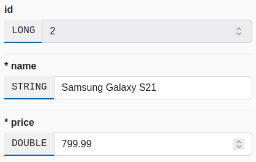
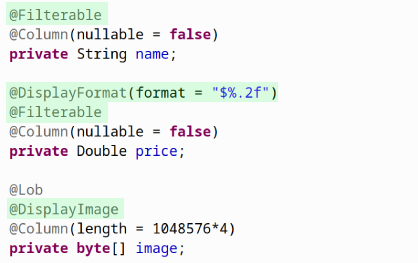

Features
SnapAdmin scans your existing code base and automatically builds everything at runtime: you won't have to modify your existing code base.
First-class CRUD
Complete CRUD features for all entities and their associations, with out-of-the-box support for JPA validation constraints and multiple field types.
Annotation-based customization
Customize SnapAdmin by applying annotations to your classes, methods and fields. You can apply custom formatting and naming, create custom columns and more.
Not just CRUD

With SnapAdmin you also get: audit logs for write operations, advanced filtering & search, data export (CSV, XLSX, JSONL) and an SQL console to run and save frequent queries.